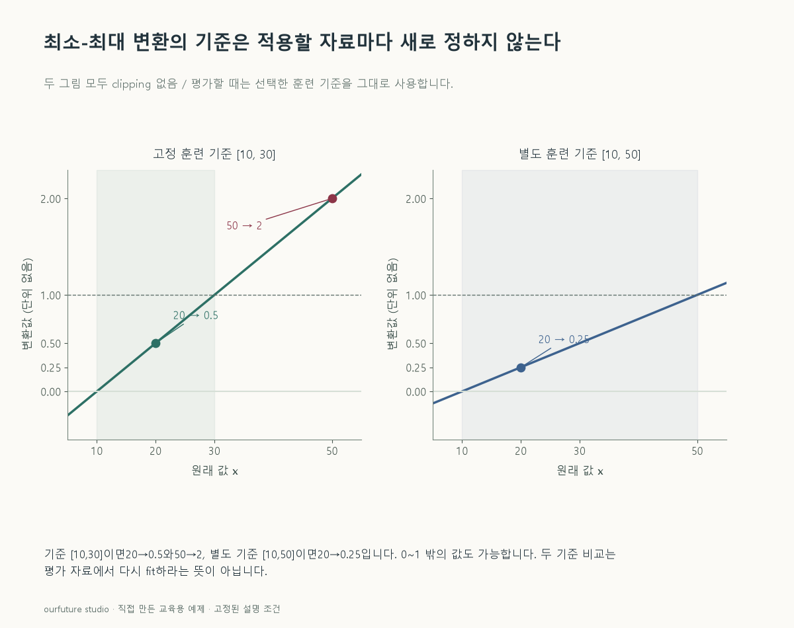

조건을 바꾸며 확인하기
기준은 훈련에서 저장한 값이다. 다른 기준의 교육용 비교가 평가 자료에서 다시 fit하라는 뜻은 아니다.
설명 그림과 비교하기
아래 그림과 표는 고정된 설명 예제입니다. 기본·변형 중 어떤 조건인지 캡션을 읽고, 바꾼 입력의 결과는 계산 칸에서 확인하세요.

같은 문제를 직접 골라 보기
기준 최솟값 10, 최댓값 30. 0~1 최소-최대 선형 변환이며 clipping하지 않는다.
조건을 더 바꾸면?
다른 훈련 자료에서 얻은 별도 기준이라고 가정하고, 최솟값은 10으로 두되 최댓값만 50으로 바꾸면 같은 20은 얼마가 될까? 평가 자료에 다시 fit한다는 뜻은 아니다.
변형 풀이 확인
0.25
분자는 10으로 같지만 폭이 40이 되어 10/40=0.25다. 기준 변화가 비교 결과에 반영된다.
값을 바꾸기 전에 기준 구간을 고정한다.